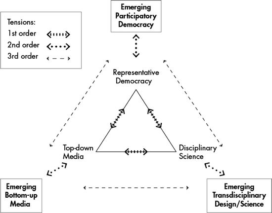

8.1 Summary: Rethinking Sustainability Governance
8.1.1 Points of Departure
This report aims for innovation by adopting and amalgamating advanced insights in order to add value to the debate on the governance of sustainable development. We adapt a specific view on the present patterns of evolution of the world using the term knowledge democracy (in ’t Veld 2010). We interpret the recently developed theories on transitions and transformations with respect to governance, and accept thinking on second modernity (Beck 1992) as a background idea. Moreover, we concentrate on dynamics, because the term development necessitates a dynamic view, and because each societal phenomenon or system is simultaneously influenced by endogenous and exogenous dynamics. Furthermore, we add ideas from reflexivity
theory, configuration
theory and governance theory. We will argue that the proposed combination of these advanced concepts leads to a new approach of sustainability governance which we call transgovernance (Fig. 8.1).
Fig. 8.1
Combination of theories and concepts leading to transgovernance
8.1.1.1 Knowledge Democracy
We refer to the evolutionary pattern of democracy as knowledge democracy because the interactions between politics, media and science have adapted a new shape with far reaching consequences, in many nations, regions and localities and on a global level. Representative democracy, as the dominant concept, appears to be in decay. Its ability to govern the present complex problems is met with wide spread scepticism. The mediatisation of both politics and science has changed the character of both, but also their interaction. As a consequence, the problem-solving potential of societies is affected.
The Curse of Success?
During the last decade, an influential debate has been conducted on the ‘knowledge-based economy’. This concept has even become the main policy objective of the European Union, the Lisbon Strategy. However, there are signs that the strength of the argument for the knowledge-based economy is weakening rapidly.
The current worldwide economic crisis leads to new, very challenging questions. These questions refer mainly to the institutional frameworks of today’s societies. It is therefore time for a transition to a new concept which concentrates on institutional and functional innovation. As the industrial economy has been combined with mass democracy through universal suffrage and later by the rise of mass media, one might suggest that the logical successor of knowledge economy is a new type of governance context, which has been called knowledge democracy (in ’t Veld 2010) (Fig. 8.2). Knowledge democracy is an emerging concept with political, ideological and persuasive meaning. The relations between politics, science and media in the twentieth century, the corners in the triangle, are prone to profound change, indicated in second-order relationships (Fig. 8.3):
Fig. 8.2
Twentieth century relationships between politics, science and media

Fig. 8.3
Knowledge democracy: Three orders of tensions (After in ’t Veld 2010)
- The bottom-up media do not only supplement the classical media, but also compete with them.
- Participatory democracy is complementary to representative democracy but is also considered as a threat to the latter.
- Transdisciplinary design or research is not only a bridge between classical science and the real world but also produces deviant knowledge and insights.
As a consequence we are confronted with tensions, threats and opportunities which are indicated in third-order relationships, also shown in Fig. 8.3. The tensions are those we find in second modernity. Society is enriched by the extensions of the corners of the triangles but it has to cope with the tensions. The first- and second-order tensions do not disappear in a knowledge democracy but do change character in the presence of third-order tensions. With regards to empirical research on this matter, comprehensive studies have not yet been conducted.
As we may observe, the outer points of the extended triangle also strengthen and stimulate each other. Transdisciplinarity nears participatory democracy, and social media play crucial roles in large scale communication processes. With this, the tensions relate mainly to the inside-outside relations in the triangle while the stimuli relate to the outer point of the corners. Moreover, we might observe relations between each inner and each outer corner (Fig. 8.4).
Fig. 8.4
Old and new forms co-exist and influence each other
This has far reaching consequences for the governance of sustainable development in knowledge democracies. We can combine other insights here. The concept of change from within (intraventions, see Sect. 8.1.4 [in this chapter]) is brought into practice both in transdisciplinarity and in participatory democracy. Social change is designed or brought about here bottom-up, out of deliberations between individuals who are concerned.
The fruitful development of relationships between science and policy making has been characterised by co-evolution, but as we shall see the conditions for that are not always met. Indeed, even less than before, the so-called wicked problems which require a ‘dealing with’ approach rather than an approach which defines simple solutions, dominate political and corporate agendas. Knowledge democracy marks the transition of representative democracy to a more mixed political system in which more direct participation in decision-making by citizens and societal groups is introduced. It also sees the appearance of social media as an alternative to the classical media, and the rise of transdisciplinarity to accompany the predominant disciplinary character of science. For the corporate community, knowledge democracy marks the transition of mere business cases (the business of business is business) to a responsible ‘green economy’ business case. This involves stakeholders, and public reporting, with a vision towards the future roadmaps of producing and consuming, and a sustainable corporate performance.
These developments cause new societal relationships between old and new institutional arrangements, which are full of tensions. They should neither be ignored nor can they be solved: they have to be dealt with and if possible made productive.
I think it is the direction in which we all have to go. Whether you call it green economy or sustainable development, basically it is aimed at finding production and consumption patterns that are more in line with the natural limitations of the planet. They are unavoidable. They are a must. We are coming up to relatively short term turnaround points; we must take a U-turn in the next five decades. (Karl Falkenberg)1
8.1.1.2 Second Modernity: ‘And’ Instead of ‘Or’
The second concept we embrace is the second modernity viewpoint (Beck 1992).2 This notion states that today’s societal evolution is characterised by the emergence of tense relationships between contradictory phenomena, by ‘and’ instead of ‘or’. We accept the viewpoint of Ulrich Beck and others, that the specific character of the era we live in is no longer determined by the substitution of the former institution by a new one, but by the emerging tense coexistence of both. They need each other although there are controversies, and continuous tense relationships. Rosenau’s (2005) definition of fragmegration, identifying sustainability both as fragmentation and integration, is a typical example of that character. Another instance of this is globalization, which on the one hand describes the simultaneous enlargement of scales of economies, of institutional arrangements and of thinking, whilst also arguing for local identities and intimacy. In order to properly understand the meaning of this observation we must digress on globalisation. This phenomenon, made possible by technological innovations, has led to unknown potentials to influence economic and other developments elsewhere in a massive manner within a split-second by transactions on capital markets and others.
Knowledge democracy also has second modernity characteristics: representative democracy does not disappear because of the rise of participatory democracy. The classical media stay alive while social media grow, and disciplinary science goes on, while transdisciplinarity begins to flourish. The relationships however are full of tensions, and governance in the context of sustainable development will either be effective or ineffective depending on its ability to handle such tensions.
8.1.1.3 Techno-social Systems: Reflexivity
We have organised our worlds in order to master technologies, to produce goods and services according to human preferences, to enable people to pursue happiness, and to avoid as well as fight disagreeable actions and events. The patterns of organisation are immensely varied and interconnected.
People have organised themselves in stable social systems like tribes, villages, cities, regions and states, but can be observed also as flows of fugitives, masses, publics, crowds and other temporary shapes. Moreover, people live in a technological manner, that is, they are surrounded by applications of technologies in nearly every aspect of their activities, and themselves are increasingly becoming parts of technological systems. Moreover, people are (parts of) ecological-biological systems, or at least are surrounded by such systems.
All systems are due to change over time, but they evolve in very different ways. Some seem to change according to an S-curve, while others show tipping points. We may be able to analyse the change of ecological-biological systems with the support of natural sciences which lean heavily on regularities, often formulated as causalities. These regularities shape bodies of knowledge. This type of knowledge is accumulative in nature: our knowledge about stars nowadays is better than it was a century ago. Indeed, it can be utilised to forecast, to steer, and to develop.
Social systems however are functioning according to the way in which reflexivity, as we refer to it, operates. This concept is concerned with human competence to learn, and to adapt. This competence enables people to learn from any source, experience, practice, information, knowledge, theory, and so on, and to re-orientate behaviour subsequently. The inner logic of this learning process is unknown to any outside observer. As a consequence, the future behaviour of a social system in general cannot be forecast properly. It is doubtful whether knowledge regarding social systems can be characterised as accumulative: social systems will learn from any knowledge known to them. As a consequence, the knowledge may lose its validity. Knowledge on social systems is volatile in principle.
These considerations about the reflexive nature of social systems and interactions shed more light on one point addressed further (Sect. 8.4 [in this chapter]) under the rubric of configurations theory. Systems can often be influenced from outside. We call a purposeful attempt to influence a system from outside an intervention (or steering action). We call an attempt to influence a system from inside an intravention. The volatility of knowledge concerning social systems provides a major hindrance in attempts to formulate adequate outside policies for interventions pointing at change, because the knowledge base is not trustworthy as far as the functions and characteristics of social systems are concerned. Reflexivity, or in Giddens’ (1991) terminology reflexive monitoring, leads to intraventions.
8.1.1.4 Configuration Theory and Intraventions
In order to grasp the way in which actions of a certain actor may influence other actors, we can build on configuration theory (e.g. Van Twist and Termeer 1991). This theory offers a profound insight into the essential aspects of organising and the specific approach of organisations. It helps us to develop a more satisfactory vision on multi-level governance. Organising, according to this theory, takes place via reflexive processes of argumentation and communication. These processes are taking place repeatedly and intensely between the members of a group. They gradually shape a common understanding, a common sense, a common frame, a common view on reality, and moreover a common idea of meaning within the group. We call the result of such processes a configuration. A configuration develops along two dimensions, the social and the cognitive dimension and thus truth claims emerge with regards to both substance and social relations.
As argumentation and communication decrease in intensity because of the internal consensus found, fixation begins. The configuration has grown up, but the danger of a standstill starts to grow. The disappearance of reflection creates stability but learning stops. Innovation becomes problematic. Inclusion and exclusion go hand in hand.
How can grown-up configurations still then innovate? Not by steering from outside, but also not primarily by impulses from the leader, the centre, because the centre is the centre due to social fixation – firm beliefs, vision, leadership, and so on. The centre, to a certain degree, could even be called the least plausible source of innovation.
People however live in different configurations: the peer group, the firm, the church, and so on. They are multiply included in several configurations. Multiple inclusion may be a ‘burden’, however, it also enables the multiply included actor to introduce ideas existing in configuration A and also in configuration B. He or she will be more credible in this role as he or she is engaged in both worlds and hence in a position to ‘transfer’ meaning. The fact that such an actor may be more often than not a marginal actor in both configurations may rather contribute to his or her capacity to bridge divides rather than hindering them. Configuration theory teaches us to abstain from naïve classical planning, steering or instructing, because the overwhelming majority of configurations live in the phase of fixation.
We have to reform the existing institutions from within. That is a slow and gradual approach which requires leadership – and at the moment there is no leadership – but that is what we need to do. […] The pressure to reform and strengthen existing international institutions is necessary, and needs to come from civil society too, with a call for reform through the merger of existing organisations. We have for example the UNEP and the UN’s Commission on Sustainable Development– and governments can play these two organisations off against each other. At the UNEP they say that it is not the forum to discuss this issue, we have the Sustainability Commission for that – and they do the same the other way round. And they are running around, fooling themselves and the electorate when they do so. (Jan Pronk)
More advanced intervention approaches, leaning on the awareness of multiple inclusion as a device for change, are necessary. Successful steering takes place from within configurations, not from outside interventions. Therefore we need ‘intraventions’more than interventions.
8.1.1.5 Governance Theory
We can define governance as a collection of normative insights into the organisation of influence, steering, power, checks and balances in human societies. With this said, ‘good governance’ is a pleonasm. Governance relates to social systems. These are reflexive in nature. They learn continuously, with the support of experience, knowledge, revelation and so on. Creating governance means shaping and influencing social systems, so governance should be reflexive in itself. Moreover, reflexivity is the engine of learning, and therefore of dynamics, so governance should be formulated in terms of dynamics. Any governance which hampers learning, intentionally or not, is doomed to fail in the realm of sustainable development.
Metagovernance in the definition of Meuleman (2008), is an approach which aims to design and manage a – situational – preference for a mix of institutions, consisting of elements of hierarchical, market and network governance. Each of these exists on its own, but metagovernance can help understand how they should be related. It is important to note that metagovernance is not exclusively a state approach: each societal actor can develop a metagovernance attitude.
We are confronted with the well-known puzzle of infinite regress once we raise the question of how to realise ideas on metagovernance: we would have to decide first, how to decide on governance, but in order to do so we must first decide how to decide on metagovernance, and so on. In our world the production of goods and services is realised by enterprises. The governance of societies is partially governed by governments, or better parliamentary democracies, and other institutional arrangements. Governance is also not solely government.
We have not yet found a solution for how they [companies and NGOs] could be more directly involved. There are open sessions in which NGOs and stakeholders can be present, so that is certainly a plus. But when the real decisions are made, it is hard to see how you can involve all of them. (Jos Delbeke)
According to transition theory (see Sect. 8.1.2.6 [in this chapter]) it is necessary that during transitions changes at each of the relevant levels ‘landscape’, ‘regime/structure’, and ‘niches’, reinforce each other. The focal term is re-structuration. Learning is conditional for each actor. Fruitful developments are possible once the actors reach a certain degree of congruency: ‘Re-structuration not only involves a co-evolution between innovative practices and structural change, but also includes the emergence and evolution of new normative orientations’ (Grin et al. 2010: 319).
In order to learn, iteration is crucial. Iteration should be indicated as a necessary activity of policy makers. Thus, governance of transitions/transformations is all about dealing with interactions, asymmetries, congruency, unforeseeable emergencies, and co-evolution of politics and science in informed debates.
8.1.2 The Challenge of Sustainability Governance
8.1.2.1 Sustainable Development
Sustainable development is all over the place. The concept is broad and vague. The vagueness of the concept has a Janus face. It has been called a unifying concept because its vagueness breeds a consensus which might be utilised later. Vagueness is an asset if it triggers action.
It has been generally accepted nowadays that humankind is able to bring about irreversible change which partially diminishes the options of future generations. ‘Sustainability’, in this context, is thought to be an answer to the exhausting and devastating way economies and societies are predominantly using social and ecological resources, in contemporary times. The normative insight derived from this notion of sustainability is formulated as the precautionary principle. This principle leads to the norm that we should abstain from action that reduces the valuable future options for choice. This norm refers to intergenerational justice.
The concept of sustainability concerns the three major dimensions of human societies: the economic, social and ecological dimension, also known as the three P’s of people, planet, profit or prosperity. The reconciliatory character of the concept raises specific questions as to the judgement on changes which lead to the improvement of two dimensions but to a deterioration in the third. Until now we have lacked a satisfactory multidimensional measuring rod in order to pass judgement on these types of changes.
Sustainable development is a container notion. The use of the singular form fits with holistic viewpoints. The supporters of these viewpoints speak about the climate, the earth system, the emissions, the planetary boundaries. All of these are at stake, and global disasters are a constant threat. Such constructs enable us subsequently to deal with a global challenge that should be met in a well-coordinated manner. So the normative construction, or better the predominant framing, of the problematique leads to a specific line of argumentation on governance. The supporters of this view may be found in international organisations which make continuous efforts to produce agreement on international binding agreements, in order to prevent disasters. Basic metaphors like the exhaustion of the earth are then very useful.
However, people do not experience the climate but a climate in the neighbourhood. They pursue a good life according to their own values and in many cases try to find a satisfactory relationship with the surrounding nature. Their visible world is not abstract or systemic but specific and concrete. Entrepreneurs make attempts to design and apply more sustainable technologies. These are also specific.
Therefore, major discrepancies may exist between views on the systemic world on one hand and the daily life world on the other. In governance concepts both views are legitimate, and both should be taken care of. Transgovernance, in the context of sustainable development and transformations (plural), must also embrace the human view and must not restrict itself to the systemic view. Restricting governance notions to the latter might prohibit people and other societal actors from utilising their competences in order to change the path of development.
We are more aware of what sustainable development is than what it is not. We feel more comfortable with judgements on improvements of unsustainable technologies than with notions of optimal sustainability. In some theories on social integration, the core of social integration is understood as shared unvalues, more than values. Sharing unvalues, give recommendations as to what should not been done, and leave more space for variety than the necessity of consensus on necessary action. The analogy is clear: getting rid of unsustainable technologies leaves room for varied roads (and roadmaps) towards sustainability.
8.1.2.2 Values
Values are social and psychological concepts. They are rooted in cognition and emotion, and they can be informed by various sources, including insights. They concern the beautiful, the good, the true, and the trustworthy. Values urge for reflection, interventions and intraventions. Socialised values lead to norms that regulate human behaviour. People live values. Values that are lived, albeit in the shape of explicit norms, constitute culture. The specific culture of a certain social system is its identity. Cultures and identities may change over time. This change however takes place in a reflexive manner. Developments in accordance with values make sense.
Well-understood self-interest might lead to collective action which respects ecosystem services and social welfare, and may even produce collective goods. Egocentricity and free-rider behaviour however demand violence monopoly over a group in order to ensure sufficient collective goods production.
8.1.2.3 Cultural Diversity
Views on sustainable development vary with cultural backgrounds. How should we deal with cultural diversity in relation to sustainability, and in particular to the precautionary principle?
Culture is the production of meaning, and meaning relates to values. Without values there is no meaning, and no culture. Humankind has brought forward many varied cultures. In a certain normative orientation we experience cultural variety as richness. However, our basic attitude to cultural diversity is more critical than our attitude towards biodiversity. A society needs a certain cohesion, which is produced as a moral order, based on consensus on some fundamental values and norms. Indeed, culture within a society is also sharing some common substantial and relational values. A society consists of configurations. A configuration possesses a specific culture but as observed earlier, this leads to outside walls and thus tensions arise. In particular, the tensions between emerging identities on one side, accompanied necessarily by outer walls, and the need for cohesion and collective action on the other will never disappear. Shaping governance therefore, is walking a high wire.
We may conclude that biodiversity and cultural diversity are both components of sustainability. We may mourn the loss of a language somewhere on this planet as much as we may about the loss of a species. However, this does not represent our general insight. We do not believe that each culture is intrinsically good. On the contrary, some cultures are horrifying to many. As sustainability also implies the economic and social dimension, we realise that ‘diversity always is a bedfellow of inequality’ (Van Londen and De Ruijter 2011: 14). Inequality might be a threat to sustainable development and thus our attitude towards cultural diversity is ambiguous.
I think that what is missing is a clear regional and culturally rooted process of development management. It is not the same to do something for the Arctic people as for people in El Salvador. Both have the same problems but have very different outcomes. (…) At the local level one of the key issues is to involve women, especially as they are directly related to survival, and especially in the very poor countries. The World Bank has understood that in the micro credit system they have a better return rate if they do it with women than with men. (Úrsula Oswald Spring)
According to second modernity it is probable that from the tense relations between emerging opposites, variety further increases. Striving for sustainable development urges us to take these tensions fully into account when dealing with governance. Governance is a relational concept. Hierarchy needs dependent subjects, network governance requires interdependency between partners, and market governance necessitates independent relationships.
Hence, it is fair to assume that different governance styles also reveal how people consider other people’s values. Complex metagovernance combines the different archetypes, so that different patterns of relational values are also assembled. In system theory it is held that diversity promotes resilience, while uniformity breeds fragility. This may also be the case regarding cultural diversity. Diversity alone leads to chaos; what is probably needed is institutional redundancy, similar to redundancy in ecosystems.
Reflexivity is the strongest engine of social dynamics. It also relates to governance. The interaction of the general laws of diminishing effectiveness and of subsequent policy accumulation as indicated above, lead to crises which enable a phoenix to arise from the ashes, and to invent new governance arrangements. We are aware of the inevitability that government as a major component of governance will consciously destroy variety according to predominant substantial values, but also profoundly influence social relations and relational values. How the latter evaluate is due to reflexivity. We may better observe, with the support of the foregoing schemes, how these evolutions emerge. We will realise in shaping governance that tensions are not going to disappear but tend to intensify as governance solidifies. We understand that the precautionary principle sometimes demands the destruction of cultural variety. We know that biodiversity and cultural diversity have similarities but also major differences.
Governance of sustainable development is extremely complex as it must deal with all the tensions described above and their dynamics, while at the same time it is itself subject to reflexivity. Aiming at compatibility instead of assimilation appears to be a useful recipe.
Putting all your eggs in one basket and relying on government seems dangerous, I think you have to find other ways to do this. Maybe social media will help here – I think the private sector can also be very helpful here, although they can also cause a backlash. So you have to try all of these things in the absence of strong government and of institutions that aren’t that effective – you need a multidimensional, multi-track approach. (Eileen Claussen)
8.1.2.4 Planetary Boundaries
Recently a powerful new concept about global developments has been published: the idea about planetary boundaries. How to deal with the governance implications of this concept? The major difficulties that the concept causes are the following (Schmidt 2012):
- The boundaries are solely formulated in one of the three dimensions.
- The aggregate level of the truth claims seems to necessitate central decision-making.
- It remains unclear how to disaggregate the boundaries in order to create a frame of reference for other, de-central decision-makers.
Regarding the first cause, it is worthwhile, or maybe even necessary, to identify planetary boundaries in the other dimensions of sustainability, in order to restore equilibrium again. In economics for instance, the concept of a ‘positional good’ resembles the boundary concept. The core idea here is that the utility of certain goods and services decreases once the supply enables mass consumption. This decrease may be gradual, but the loss of sociability which Hirsch forecasts as a fatal consequence of the expansion of the relative share of positional goods in total consumption, might bear a tipping point character.
When dealing with cultural diversity we have already concluded that a minimum of social cohesion within a society is needed in order to produce the worthwhile public goods. This cohesion may be protected by the existence of a democratic nation-state, but the minimum condition is valid in other regimes too. With this in mind, loss of social cohesion as it is described in the literature on social capital, also leads to the awareness that we trespass a critical boundary if we lose too much cohesion, for instance either by intense individualisation or by the predominance of greed in economic affairs.
The third cause should be seen as challenging scientific excellence: The concept of co-evolution between decision-making and science must be focussed on this cause. Further research is required as well as think pieces which dig deep into the question of whether and how global boundaries would be derived from local and regional boundaries. Transgovernance (as a concept, a method, as a dialogue-style policy) is again the key here. Geopolitical stratification (the world of a nine billion population with emerging economies, and new alliances, a multipolar power system) will be in desperate need for this kind of – as we suggest calling it in line with our transgovernance concept – mosaic-style way of putting planetary boundaries together and making them useful for policies.
8.1.2.5 Dealing with Emergencies
Uncertainty prevails in long term decisions. The consciousness of threats or emergencies creates the sense of urgency which is often necessary to take decisions at all. As Bachmann (2012) points out, historically emergency response action has been one of the prime ‘sources’ of environmentalism. However, here the distinction between the two categories of long term problems is also decisive for the kind of action to be taken. If the objectives of actions to meet threats are formulated too roughly, like greening the economy or a change of less than two degrees in mean global temperature, it remains unclear which measures should be taken, and whether one should aim at resilience or at persistent interventions.
Adoption of the resilience approach might lead to delay of decision as the best approach, because in the case of a long lead time between action and effect we may delay as long as we respect the lead time.
The whole domain of sustainable development is filled with dangers, threats, risks, emergencies, and related phenomena, but also with options, opportunities, chances, beginnings and stories of success and progress. Often, environmental emergencies may serve in a lens-like way to clarify options and problems. In conventional governance systems – due to their focus on institutions and regulations – the ‘sudden chance’ and the unforeseen impact are frequently excluded.
In addition, here we should examine both sides of the coin: on the one hand these phenomena produce a sense of urgency, a momentum for action. This may be important and precious because many political systems in general are rather lethargic as the transaction costs of action appear high or are deliberately perceived as high even when, in fact, they are not higher than the costs of non-action.
On the other hand, hypes, momentum, and the like, are volatile: ‘they do not keep longer than fish’. Additionally, the transaction costs of regaining momentum are often considerably higher. Indeed, unless the emergency is gradually converted in more fundamental components of value patterns and competences in knowledge and responsible action, the net result of an emergency as far as sustainable development is concerned might still be negative. This, again, is a field for transgovernance concepts which bring knowledge and action, responsibility and awareness, engagement and reasoning together. Letting options for transforming pass by unused is the worst result of a crisis or an emergency.
8.1.2.6 Transformations
Sustainable development is often described as a great transformation in Polanyi’s (1944) terminology. Our insights into the nature of profound change are deepened by recognising the insights produced by the advanced transition/transformation theory – as developed, for example, by Grin et al. (2010). It deals with the multi-level and multi-scale evolution of technical and social systems utilising a multi-level approach along the distinction landscape-regime-niche. What happens in the niches is not altogether separated from regime changes, but the relationships are loose and complex.
We suggest using the term transformation in its plural form. In a world of high complexity and multifactor drivers of development it seems reasonable not to single down transformation into a one-size-fits-all approach. The notion of ‘wicked problems’ supports concepts for transformations that always include a variety of pathways and features. Furthermore, by using the singular, a large-scale perspective is often applied or suggested. Yet many if not most of transformative changes are taking place at a very small-scale level ranging from technological innovations in niche-markets to adjustments in individual behavioural patterns leading to profound changes if aggregated. Transgovernance is rather about finding and nurturing such small-scale transformative changes instead of neglecting them for the sake of large-scale systemic interventions.
8.1.2.7 Towards Transgovernance: Beyond Conventional Governance
How does sustainability governance look when we recognise the concepts of knowledge democracy and second modernity? The best answer might be that we do not need a new paradigm, a new orthodoxy, but should develop the sensitivity to look beyond governance conventions. This implies an approach beyond traditional forms of governance, beyond disciplinary scientific research, towards more transdisciplinarity; beyond borders formed by states and other institutions, towards trans-border approaches; beyond conventional means to measuring progress, towards new and more interactive measuring methods; beyond linear forms of innovation, towards open innovation; beyond cultural integration or assimilation, towards looking for compatibility. In other words, governance for sustainable transformations requires thinking beyond standardised governance recipes, towards a culturally sensitive metagovernance for sustainable development. The combination of these steps beyond familiar sustainability governance, we call transgovernance.
Transgovernance is an approach rather than a recipe. Using this approach, solutions may differ. We have suggested a number of these possible solutions, such as global innovation networks of governments and corporations, innovation tournaments for small and medium enterprises, nation states in a new role as process architect, and a new diplomacy for international agreements.
The challenges for sustainability governance leadership go beyond designing solutions. It is essential to have a long-term orientation, in order to understand the complexity of our time and to understand the lesson that changes of real-world configurations often come from inside (intraventions). Leadership needs sustainability skills. The conventional hard skill/soft skill approach is being challenged.
We see today that individuals play a big role. There are a few leaders in their countries making a difference. I also think it cannot be just individuals. We need to make sure that all the things we talked about there is proper information, we organise structures, discussions we collectively set frameworks that behaviour is moving in a more knowledgeable, knowledge-based direction. We do need leaders. Leaders dependent on polling results are not what we need for the fundamental change (Karl Falkenberg).
8.2 Recommendations
Our Summary introduces several concepts which are crucial for rethinking sustainability governance: knowledge democracy, cultural diversity, planetary boundaries and reflexivity, as well as structural changes through emergencies. Below, examples are provided of possible consequences of using and linking these conceptual cornerstones. These insights are formulated as recommendations and are presented on ten sustainability governance themes:
- Developing societal networks that trespass the traditional boundaries of governance arrangements, involving private and public actors: ‘co-decentral’ arrangements.
- Conditions for better long-term decisions.
- A new diplomacy for international agreements.
- Conditions for a more transdisciplinary science system.
- Checks and balances in science communication.
- Upgrading the relevance of city initiatives.
- Nation states in a new role of process architect.
- Crowdsourcing and volatile publics.
- Creating space for new institutions, and allowing for old institutions to be phased out or to be transformed into new ones.
- Measuring progress through metrics which are to be found in dialogue-style search procedures.
8.2.1 New Private-Public Networks: Co-decentral Arrangements for Technological Evolution
Conventional governance respects boundaries between public and private actors. Hierarchy and regulatory power are reserved for public actors. Our insights into reflexivity bring the observation that many conventional arrangements are useless as far as fundamental change is concerned. In order to further this we need new, semi-horizontal relationships. We call these relationships co-decentral. It is possible to design a private-public network, consisting of corporations, citizen groups and scientific bodies, that will further sustainable technologies, while public bodies ensure a level playing field.
Technology and sustainable development have complex and crucial relationships. On one hand, the precautionary principle produces critical attitudes towards technological developments that may bring with them considerable risks and possibly produce irreversible and unfavourable effects. On the other hand, new technologies may enable humankind to take production in a far more sustainable direction. An important example is renewable energy.
The technological development in a number of domains lies mainly in the hands of large enterprises, but in other less mature developments multitudes of very small firms are responsible for innovations.
Big business has a huge role – the Walmarts of this world – they have a huge possibility of putting demands down the whole demand chain, the whole structure. And by that – in combination with what politicians do, in combination with the right price structure, in combination with civil society and the awareness rising among citizens – they start to just do things differently to what they did only five years back. (Connie Hedegaard)
We design two institutional arrangements which cope with this diversity:
Proposal 1: A Global Sustainable Innovation Network
Most technology driven markets for consumer goods and services are worldwide oligopolies. Because of this a limited number of enterprises are in a leading position. Although they cooperate with universities and other scientific centres, they themselves provide the leadership for the direction in which the technological development moves. In many cases they operate in business to business chains with suppliers and subcontractors. Nowadays they report to the public at large about their general position towards sustainable development.
The employees in the higher ranks within large companies are – more than on the average – sensitive to sustainability issues. Within R&D departments, professionals develop value patterns which are often closely linked to those of important NGOs in the same domain. Therefore employers with a high sustainability profile are very attractive to conscious and competent professionals, and vice versa. Thus such a profile is rewarding in at least two relationships, with clients and with employees.
Public authorities may regulate broadly, in attempts to prohibit unsustainable developments or to further innovations, but they can hardly influence the paths of technological evolution chosen by large companies because governments neither sufficiently understand the most advanced elements of technologies nor the crucial trade-offs which entrepreneurs are confronted with. Moreover, in large parts of the world, public authorities cannot dispose of policy instruments which force entrepreneurs to select a specific critical path for their technological innovation.
Sustainability is one of the main challenges for the decades ahead and the market will not produce sustainable outcomes – so then there is a major task for international institutions – for international institutions, for national government, but also for local government to set standards and to issue laws within which and on the basis of which sustainability can advance. The market itself will not produce sustainability to the extent that is necessary. (Jan Pronk)
However, the competitors and subcontractors, and even remote enterprises which utilise either identical or related technology, in general have a far better understanding of these positions.
Generally speaking there are various roads towards more sustainable technologies. Competitors and scientific partners can make reasonable judgements with regards to the direction which a certain company chooses.
Consumers, clients – also being citizens – are increasingly sensitive in the long run to matters of sustainable development. They organise themselves in numerous ways. These consumer organisations could be powerful allies in the combat for sustainable development.
We need a regulatory framework in which individual companies function. We all want market economies, but we all know that they don’t work without rules. Environmental collateral damage needs to be taken into account. There are cost-producing damages that society is not capable of shouldering anymore. We have to stop polluting in the way we have so far, and there are only two ways of getting there: (1) regulate what emissions are acceptable, and (2) put a price in order to incentivise innovation, in order to better accommodate the limits of the planet. (Karl Falkenberg)
If we consider the aforementioned chains, networks and other relevant relationships as a potential landscape for the evolution of governance, we might envisage the following scenario, which is of course not a blueprint:
- Public authorities may design a regulatory regime which ensures level playing fields for enterprises that strive for sustainable technological evolution. That means among other things the following: the competitive advantage that is collected by entrepreneurs utilising a less sustainable technology should be considered as false competition. The public market regulators could be enabled to burden these entrepreneurs with fines, or peculiar taxes.
- The 250 largest companies in the world will set up a co-decentral network in order to make judgements regarding the preferable patterns of technological evolution in many different sectors. They will promote the erection of networks within each sector which encourage the empathic cooperation of suppliers, manufacturers and subcontractors in sustainable directions. The (global) network will provide a system of communication that produces possibilities for naming, faming and blaming.
- The existing national and international competition authorities spend the income they collect on fining to fund prizes and rewards for excellent entrepreneurial performances in sustainable solutions.
- The network is connected with communities of clients and NGOs who contribute to dialogues and the collection of information on entrepreneurial practices. Crowd sourcing is not only used in order to detect data on facts, but is also utilised to discover fraud. The power of clients and consumers then is fully mobilised.
- Research institutes all over the world will be stimulated to select their patterns of cooperation with companies in such a way that they will be connected with the strongest sustainability directed networks and chains.
- In this manner the consumer and the citizen would be reunited in a governance arrangement which combines the value structures of entrepreneurs with the moral standards of citizens/consumers in a knowledge democracy landscape.
(…) if we are all together in this – citizens, business, municipalities, government - then in the UN structure you should also have more formal representation of for example the business community; yes I believe that they should be there. (…) But I just want to emphasise that in the end, and that also goes at the UN level, governments, elected governments have the responsibility. (…) You can include business, you can hear them, you can do a lot of things, but you cannot – I cannot foresee – a system where you have one country here and you have this huge top 50 company over here – sitting on a par – no I don’t think that. You should also in the UN system have somebody who is accountable to people in the end. (Connie Hedegaard)
The existing differences inside the corporate community will shift in direction and the forerunners will join forces, which will in turn stimulate the mainstream in the direction of jumping on the bandwagon of sustainability. It would help to enrich the governance of already existing policies such as the 10 year Framework programme on sustainable production and consumption. Moreover, links should be created with existing innovative ideas and initiatives like the Vision 2050 report of the World Business Council for Sustainable Development (WBCSD).
I think it is an inevitable development because we have a world that is increasingly resource and pollution constrained. The only way to deal with that is by pushing resource efficiency and less polluting solutions. That is what is happening. At the same time, though, in a world which is constrained like that you see competition for resources and for who is going to be the leading supplier of solutions. There is a race – a green race – and the leading actors are some of the Asian countries like China. If you want to win the green race you have to change your domestic market to build scale and demand and skills – that is what China is doing with its next 5 Year Plan. It is a game plan for the green race. (Björn Stigson)
Proposal 2: Sustainable Innovations Tournaments for Small and Medium Companies (SMEs)
The above formulated recommendation will also concern those small and medium size companies which function as subcontractors for the large oligopolists that shape the network. However, in many domains small companies will contribute to new technologies without such strings. It will be worthwhile to organise on a global scale large tournaments for sustainable innovations domain by domain, where small companies and groups from knowledge institutions may compete for considerable prizes to be offered by the UN. The already existing networks of cities could play major roles here too. When compared to many others they are more aware of rising small stars in the world of sustainable entrepreneurs.
[Collaborations on sustainability] are happening in large corporations across the globe, but primarily in developed economies. Small and medium size enterprises, which account for over 90% of the world’s businesses and 50% to 70% of national GDPs, are not there yet. (Juan José Daboub)
8.2.2 Better Conditions for Long-Term Decisions
Sustainability governance has an intergenerational dimension, which implies that long-term decisions should play an important role. Such decisions require specific governance conditions (Meuleman and in ’t Veld 2009) which should be addressed in an innovative way. Transitions such as the typology of developments influenced by long term decisions are societal reconfigurations. The main conditions are:
- Take into account that different types of long-term decisions require different approaches. We should distinguish at least two types of long-term decisions:
- Cases with a relatively long period between the policy intervention and the intended effects: a long lead time. This type demands firm leadership in order to collect sufficient momentum for the focal decision.
- Cases that demand a long-lasting series of interventions that as a whole is necessary to cause a favourable effect, following the ‘drop in the bucket’ – metaphor. This type asks for perseverance, consistency, continuity and reflexivity.
- Sustainable development requires the consideration of long-term futures; uncertainty and complexity prevail. In some cases we are able to forecast to a considerable degree, then we may anticipate. In the majority of cases we must meet the existing uncertainty by concentrating on the acquirement of resilience.I think we need to come to this broader societal consensus so politicians can take longer term perspectives. The funny thing for politicians is, these short term conditions make it easier for them to make longer term commitments. [Example Obama] It’s going to be ten presidents down the line in terms of fulfilling targets they have made. So it goes both ways. We need collectively to make sure that they are politically responsible people, that what we get from them is not only income tomorrow morning and income in 50 years. (Karl Falkenberg)
- Long-term decision-making therefore requires governance which is primarily reflexive and resilient, supported by (legal) safeguards to keep issues on track longer than one or two political cycle(s), and to maintain a certain level of reliability and stability. In many cases it requires some dominance of network governance, with hierarchical and market governance ‘running in the background’. Such a governance mixture presupposes that institutions involved in long-term decision-making are able to act in a resilient way. This implies investing in flexibility and in alertness (creating ‘watchdog capacity’), without making the institutions unstable and unreliable.
- Furthermore, it is important to recognise that long-term impacts of decisions may become underestimated, because the problems which lead to the decisions have reached the end of their policy life cycle. Long-term decision-making may require policy mechanisms that prolong the policy lifecycle of policy issues.
- It is also important to be transparent and realistic about the limitations of decision support systems, and to ensure that ethical and political assumptions in decision support systems are chosen in the political arena.
- The knowledge basis for long-term decisions requires a comprehensive approach. Knowledge production for long-term decision-making should be a combination of future orientation, design and research (F-ODR3) bearing many elements of transdisciplinarity. This demands different process requirements than the requirements for ‘normal research’ and conventional ‘future-oriented research’. Participation of actors is one of the key requirements.
- Investing in increasing the long-term oriented values of citizens may make long-term decision-making more politically feasible: it will be less risky in terms of losing support from voters.
- The consequences of using the wrong ‘best practices’ in long-term decision-making processes may be even more damaging then in short-term decisions. Instead of copying ‘best practices’ it is better to translate them into a form which works in a specific situation, tradition and culture. The crucial question is: What works where and why?Whether we like it or not, we are locked into each other going forward in a way were not in the past. When we look at these partnerships, there is the question of the role of civil society. I see civil society as the supplier of trust for these solutions. Even if we are in agreement in government and business about what should be done, none of us enjoy a high degree of trust. So we need cooperations with civil society to provide trust for the solutions and to gain political acceptance of some of the solutions going forward. (Björn Stigson)
8.2.3 A New Diplomacy for International Agreements
Until recently, international agreements have played a major role in the furthering of sustainable development. It seems, however, that the past years have hardly shown any further progress.
The speed by which climate agreements are reached at is determined by the slowest player. For that reason I think that measures at the national level also have to take place in parallel to these international agreements for us to make progress. (Bärbel Dieckmann)
Widespread dissatisfaction on the effectiveness of many treaties and other international agreements is one explanation for the stagnation. Our second possible explanation is that the reflexivity on behalf of the younger nation-states as to the predominant approaches, concepts, methods and instruments which are put into practice in international relations has founded the sentiment of being victims of hegemony.
There is this discussion if we should, every time we have a new convention, create a new institution around it. For biodiversity, for Montreal, for climate, for whatever…The tricky thing is: if we spend a lot of time fighting over these institutional things, while we really need to get some action done, how do we balance these things? … I think that what will bring us most is a structure that supports the mainstreaming and [does] not isolate. (Connie Hedegaard)
With this in mind, the call for institutional but also cultural variety in governance is increasing. Indeed, the attempt at agreeing on percentages of reduction of emissions must resemble a postcolonial hegemonic gesture for those former colonies which had earlier experienced a delay in economic development and are only now seeing their economic growth percentages increase. This has produced a lot of resistance to continuation of the routines leading to yet another binding treaty. The second modernity viewpoint does not allow the recommendation that from now on we should abstain from efforts on the global stage to reach agreements, but that they need to be modified considerably in the following directions:
- Because we have to deal with wicked problems, the complexity of solutions should match the complexity of the problems, as Hoogeveen and Verkooijen (2010) rightly argue. This is because such complexity may be better met by a variety of arrangements working towards a common goal rather than a monolithic, holistic arrangement which tries to capture every aspect of it itself.
- Each party has to realise that cultural variety does not only relate to the substance of sustainable development but also to the scope, shape and instruments of binding arrangements themselves; also with respect to these components fear of hegemony might cause stagnation.
- If on a global scale the differences are too considerable in order to reach unanimous agreements, it might be wise to concentrate on regional agreements which would unite a number of more homogenous countries. These differences may be between actors, which includes culture variety, differences in their stages of ‘development’, differences in power, or belongings to powerful sub-groups such as the EU or G77/China.
- Each international agreement must be accompanied by efforts of nation-states to bring about national and sub-national complementary and synergetic additional arrangements.
- A new diplomacy is needed, because the variety of relevant actors has increased, and because the complexity exceeds the competences of traditional diplomats. In addition, here transdisciplinary trajectories are indispensable, leading both to cooperation between policy-makers and scientists, as well as between policy-makers and stakeholders.
- A single treaty, a single instrument is in many cases inferior to a portfolio approach, if the portfolio successfully arranges for a level playing field.
- Under certain conditions, voluntary agreements with a strong moral appeal, accompanied by effective naming, blaming and faming mechanisms, might be at least equivalent to legally binding agreements.
8.2.4 The Organisation of the Scientific System
One thing that troubles or occupies me greatly is how one can have uncontested knowledge and information – and yet not act upon it. (Bärbel Dieckmann)
Has science lost public authority? If so, than the support for action perspectives based upon knowledge has lost its legitimacy. Maybe it is too easy to argue that public authority as such has disappeared in any societal domain to a considerable degree. Some specific explanations are offered here.
8.2.4.1 Science and Media
The first explanation is primarily concerned with the manner in which scientists often behave while appearing in the mass media. Modern science has developed mainly evolutionary patterns of specialisation into disciplines. Disciplines deal with an aspect of the world: economics studies choice under scarcity, astronomy studies the physical and chemical aspects of the universe, and so on. As a consequence, the main product of scientific activity, namely knowledge, is formulated in terms of regularities concerning relations between independent and dependent variables under the condition ceteris paribus.
4
All facts have only a value if they can stand the criticism. So you need validation. The IPCC, which is a huge validation machine and the fact all these researchers wherever they come from talk to each other, and argue, you know it is quite expensive in terms of investment but that needs to be done. (Jos Delbeke)
The validity claim is formulated within the specific methodological constraints agreed upon within the discipline. The methodology serves as an internal tool for communication, but also as a device in order to immunise against outside criticism. Contradictory viewpoints may arise, and are even normal, but will be analysed according to the methodological rules of the game. Among many scientists it is in confesso,5 that the roots of scientific knowledge are hypothetical in nature.
Scientific disciplines have outer walls. Representatives of different disciplines may communicate but they will experience language problems. Specific words have specific meanings within a specific discipline. In the political realm however societal problems are dealt with. They never bear a monodisciplinary character and thus monodisciplinary knowledge is never immediately applicable in the solution of a real world problem. Therefore it has to be amalgamated with other scientific insights, and moreover with value judgements.
If a scientist responds to the invitation to present scientific insights to a broader public, he is tempted to leave out all of the complicating remarks about the methodological constraints under which the insight has been formulated. Journalists do not like such considerations. Moreover it is often assumed that the scientist’s viewpoint is immediately relevant in relation to the solution of societal problems. Indeed, the scientist is systematically invited to publically exaggerate the unconditional character of the truth claim of his insights. In the scientific world he would make himself vulnerable or even ridiculous by doing so, but in the media realm this behaviour is a condition for survival as a commentator. Contradictory viewpoints then become conflicting truth claims, and even real world controversies. The scientist has entered the world of politics.
Politics is a power game. In politics all weapons are admissible. One of the popular techniques in politics while dealing with wicked problems is to play two-level-games: the fight on the level of substance is supplemented with an additional fight on the truthfulness of the different knowledge sources. In this manner politicians become interested in blaming the quality of the knowledge producers who support the hostile viewpoint. This of course results in a decrease of the public authority of science.
8.2.4.2 Science and Politics: Transdisciplinarity
The second explanation concerns the way in which the scientific system relates to the other actors in the political realm. As explained above, the satisfactory management of so called wicked problems – that nowadays dominate political agendas – demands transdisciplinary trajectories. Sustainable development is the prime wicked problem on this globe. Orthodox scientists hesitate to participate in these exercises, because they hate to move outside of their comfort zones.
The scientific system is organised in such a way that monodisciplinary products earn the highest prestige. Transdisciplinarity is the trajectory performed by scientists and policymakers together in order to develop robust action perspectives by amalgamating scientific and normative political viewpoints. Transdisciplinarity is seldom punished because the participant in the aforementioned trajectories will easily step on hostile political toes. In addition, politicians decide on the allocation of many resources for science.
In some European nation-states we have even observed recently that many interdisciplinary scientific institutes have disappeared. Moreover, many boundary work organisations which have built bridges between science and politics have been abolished.
According to principles of second modernity, the organisation of the scientific system following distinctions in scientific disciplines should not disappear but be supplemented with constructions – not necessarily permanent ones – that could further transdisciplinarity. With this in mind, reorganising the scientific system in the direction of positive incentives for participation in transdisciplinarity is a necessary condition for better fits between science and politics in relation to sustainable development. A number of splendid examples exist which could be multiplied. Jungcurt (2012) suggests complementing the concept of boundary work with a configuration approach based on conceptualisation of the boundary space in international decision-making which allows the positioning of institutions with regard to their degree of politicisation and their position in terms of national and regional representation. Such an approach could be a useful guide in the further conceptualisation and application of the boundary concept.
The German Ethics Commission on the future of energy was an innovative attempt – I don’t think we had something like that ever before. It reminds me a bit of the common programme of unions, business and politicians we had in the 1970s for solving the economic crisis situation. The question is if something like the Ethic Commission can be achieved for other issues. I think that big problems should indeed be tackled by more inclusive deliberation. The Internet can help to connect people with different interests. (Jo Leinen)
8.2.4.3 Natural and Social Sciences
The third explanation specifically concerns the way in which physicists, chemists and some biologists frame and formulate their problems. They often seem to assume that such formulations are objective or neutral. As a consequence they are quite offended once an outsider points out that these formulations are far from neutral, and that therefore their positions are political by nature. The earlier discussion in this report on planetary boundaries is a good but by far not the only example. It would be recommendable that the above-mentioned scientists pay some attention to the evolution of the social science discourses during the last century. Neo-positivist claims on objective social science have gradually become the view of a small minority.
8.2.5 Checks and Balances in Science Translation and Communication
In the last paragraph we have paid some attention to the roles played by scientists outside their own communities. However, other actors also play major roles in translation and communication of scientific knowledge. If one counts for instance the unnecessary scandals caused by sloppy, careless or stupid communication by politicians (and other public officials without sufficient expert knowledge) regarding scientific matters, one would pay more attention to the division of responsibilities concerning scientific communication.
Close to the heat of political conflicts, emergencies or disasters, the political demand is often to centralise all communication and concentrate it in the hands of politicians or their delegates. As a consequence only politicians or their spin doctors speak up. However, they lack authority in scientific matters, and are often careless in presenting the existing degree of uncertainty. With this in mind, the public mistrusts them, and mentions so in the social media, where any gold digger can speak up with suggested equal authority.
Following this, politicians, disliking the mistrust, look for support, and seek scientists who are willing to state that the politicians are right. In doing so however, these scientists leave out the careful messages about the hypothetical character of their knowledge, nor do they mention the methodological constraints under which their truth claim holds. As a consequence, pointless conflicts between scientists on television destroy the remaining authority of science, and the conflicts have taken a more complex shape as they now bear a wicked twofold character: dissensus exists in two dimensions, values and knowledge.
Who should speak up in public then? Trustworthy communication should be in the hands of trustworthy people. Politicians are trustworthy in the debates on political choices but in dealing with expert knowledge they only remain trustworthy if they mention very prudently the knowledge base which they rely on.
Experts in public communication should accompany scientists who produce public statements. In general the intermediary bodies between science and politics like the planning bureaus in northern European democracies are the best equipped communicators. However, even they find themselves under pressure not to mention things which are disagreeable to the power brokers.
Special attention should be paid to the public communication on transdisciplinary trajectories. These bear a specific character: design of action perspectives is the essence! The public should be informed both about the character of the endeavours and their results. In this way the confusion could be avoided which causes citizens to entertain the idea that pure science is at work. ‘Transdisciplinary Panels’ might do the job as long as they remain clear with regards to their character.
In general, it would be worthwhile to pay still more attention to the necessity of checks and balances by establishing Neutral Public Editors of scientific information who receive public resources in order to intervene in public and even political debates once they conclude that the communication on scientific knowledge has been too one-sided. The NPE should be independent from political parties, NGOs, as well as existing corporate or social media and should be rooted in scientific organisations.
Last but not least, scientific knowledge is elitist because most new knowledge and discourse takes place in commercial academic journals which are not accessible for everybody. Sustainability governance would, as any other field in which knowledge and innovation is important, profit from broader application of the open-source method (as used for this report and the accompanying academic book).
8.2.6 City Initiatives
The majority of humankind lives in cities nowadays. In 2050, the percentage will be 75. The density of cities is a very important characteristic and the empirical driving forces of real-world reflexivity, knowledge democracy and the phenomenon of the second modernity are at work here specifically. The urban habitat is precious. The urban infrastructure is a crucial factor in energy consumption. Urban agglomerations may transform into energy neutral real estate and transport systems. The quality of air may improve considerably once more sustainable technologies are introduced. The UN has identified cities as a major opportunity for sustainable development, as demonstrated in the Global Report on Human Settlements 2011 - Cities and Climate Change, UN Habitat, 2011. Cities appear to be able to develop private-public partnerships in this domain easier and quicker than national governments.
Cities tend to learn from each other faster than many other actors. Sustainable cities are attractive cities and attractive cities are strong cities. Strong cities can be selective with regards to the access granted to new enterprises. Prioritising sustainable new firms will make accumulative progress possible.
I would say that for challenges on a global level, the bottom-up is still important and needed. The local or city level will agree on policy because it is an easier landscape of actors. We see that cities are driving things much more than countries, and countries more than international institutions and agreements. In light of the disillusionment with international processes, that local level is what you have to set your hopes on. […] Activities at that level can help us really move towards sustainability – quickly. (Sören Buttkereit)
City democracy adapts more easily than other public bodies to the new potential of participatory democracy. Moreover cities, when compared to others, may better recognise the niche players who bring real innovation and try to connect these to related actors and ‘regime’ decision makers. Glocalisation is also related to cities. A strong movement is developing that urges food producers to be nearby. Regional and local food gain in popularity and moreover metropolitan agriculture is a winning concept.
It would be a quiet revolution if national governments would be able to redefine their positions towards cities in such a way that they would feel responsible for the optimisation of the constraints under which cities could strive for sustainable development, instead of trying to prescribe to cities how to act. A striking analogy could be found with the position of nation-states in the domain of fair competition aiming at the provision of level playing fields.
8.2.7 National Governments in Transition
Although nation-states are embedded in trans-, multi-, inter- and supra-national networks, they also still possess a considerable amount of power and discretionary space themselves. They will not disappear as relevant actors, but their functions and duties are complicating: they can no longer behave as the authorities which simply decide either to regulate an aspect of life themselves or to contribute in an international global environment the willingness to close binding treaties which will settle things on a global scale.
The reflexive nation-state will continuously reveal combinations of substantial and relational values that guide the choices as to the metagovernance of sustainable development. These choices concern:
- Where to rely on existing/emerging markets;
- Where and how to encourage or regulate private-public partnerships that concern aspects of sustainability;
- How to improve the implementation of existing international environmental treaties, and how to deal with expiring global environmental treaties, as well as where to support new initiatives;
- Where and when to create or close transnational or regional agreements;
- Where and when to stimulate local internal public programmes;
- How to produce a brand of representative and participatory democracy in decision-making;
- How to build transdisciplinary trajectories towards decisions;
- When and where to utilise crowd sourcing and involvement of publics.
The choices are interrelated: once you leave a matter of concern to a private-public partnership you cannot at the same time regulate it one sided in any legal text. With this in mind, the governance arrangements are partially substitutes, but as we will see below they are also complementary, and reinforce each other. The argumentation that should be constructed has at least the following building stones:
- How close will the result of a certain arrangement be to the defined optimum?
- How large is the probability of success in the preparation of a decision?
- How large is the probability of successful implementation of the decision?
- How large are the transaction costs of action and how large are the costs of non-action?
- How synergetic will a certain arrangement function in relation with others?
- Most importantly, who is legitimised to pass judgement on all of this, in particular in transgovernance setups?
Accepting second modernity fully one has to argue that the effectiveness of global institutions is furthered by the simultaneous existence of local and regional institutions. This demands a well thought out division of scarce attention. If agreements between neighbours are generally more effective, the streamlining through a global organisation only would even be harmful.
Indeed, the complexity of the position of nation-states is illustrated by this: reasoning in second modernity terms they will continuously ask themselves how a certain arrangement on a certain level, for instance a global treaty, should be accompanied by arrangements on other levels in order to produce synergies. They will accept the need for complementarities. Although the world has become more polycentric than before, nation-states appear to be the natural process architects in order to both operate in a global landscape and combine the complementary efforts on different levels by a varied collection of actors.
If you look for what could come out of Rio+20 […] about sustainable development, in the best case you can have some agreements on a general goal, but the real action has to be done on the ground floor – at the level of states and local governments. And as you said of course it’s also all about the individuals’ behaviour. If each of us uses electric lights or other electric machines – normally we use them because this is what all people need and do. So changing behaviour will be a big step. Just because we still think that what ‘I’ do will not really affect much or anything. (Staffan Nilsson)
8.2.8 Crowds/Publics/Social Tipping Points
The world has become connected, flat, spiky and lateral. Traditionally we speak about levels of governance, ordered by hierarchy, but this type of order is in disarray. The vertical order is not disintegrating altogether but lateral arrangements, enabled by the Internet and communication technology, could possibly mean that a local initiative becomes a global hype within a very short time. Our analysis of societies must therefore also take into account new shapes of social organisation with potential influence like crowds and publics.
The wisdom of crowds may prove to be doubtful as universally characteristic (see Barbara Tuchman’s The March of Folly, 1984), but crowd sourcing is often effective. Of course it demands a thorough approach to define the objectives of the search, the nature and size of the crowd, and the method used to select the collected information. A crowd is not necessarily a random crowd. Expertise within the crowd is relevant.
If you look now, we have spring; there are a lot of observations in the nature of birds, of animals, of the flora, of what is happening. And a government can never, never monitor this without the help of engaged people in organizations looking for the birds’ life or walking in the forest reporting, to take just an example or two. So it is really in my view a bottom-up approach which is needed, both when we make and when we implement policies. (Staffan Nilsson)
‘Publics’ are even more difficult to approach. Publics are event related. As Basten (2010) argues, publics may gain political momentum, once there is an institutional void in the respect that the traditional democratic institutions fail to solve problems. However, it is also possible to utilise publics: the supporters of soccer clubs have convinced many local public authorities that it would be proper to subsidise professional soccer.
Each actor who is interested in sustainable development may attempt to activate the existing or emerging publics in that domain. With this, the repertoire of each actor is enriched but also complicated. The choice of the mix of approaches to apply is a matter of primary concern: the classical method of building alliances with the well-established actors like governments on different levels, or designing networks can be supplemented with crowd sourcing and the utilisation of publics. In some instances publics – for instance gathering on a large square – mark a social tipping point, and may gain so much political influence that regimes topple down, as can be seen once more in the spring of 2011. It appears that not only governing bodies but also and maybe in particular NGOs should reflect upon the opportunities offered by the potential meetings with crowds and publics.
8.2.9 New Institutions and Fading Away of Old Ones
I don’t think you have support for new institutions. Not at the moment. I certainly can’t see the U.S. subscribing, and it’s going to be a struggle to keep up our ability to work within the already existing ones. (Eileen Claussen)
8.2.9.1 Courts and Truth Committees
New institutions belong to the dreams of many structuralists in the dialogue. We have already discussed the continuous plea for a global decision-making body which would enable strong coordination. We have also raised doubts about the question of whether such a body would be able to cope with the existing cultural heterogeneity.
Some have formulated ideas on new institutions for conflict resolution. The erection of an international court is one of them.6 Indeed, in 2002 a large international group of judges had already concluded that ‘an independent judiciary and judicial process is vital for the implementation, development and enforcement of environmental law’. The idea of the Forum is that that the Court could impose sanctions such as declaratory relief, fines and sanctions of restoration and rehabilitation of damaged habitats. Not only states but also NGOs, corporations and citizens would have access to the Court. It appears inevitable however to agree on a treaty that would establish the Court. Every one shares the opinion that it would take quite some time to decide on such a treaty. It is improbable that all nation-states will become Signatory States, which would harm the universal character of the judiciary.
Meanwhile, there is room for other mechanisms of conflict resolution. As the long run future of sustainable development should be characterised by harmony, the installation of truth committees operating according to the South African example would maybe be preferable. The moral authority of such committees would not necessarily be inferior to that of the Courts.
8.2.9.2 Informal Communities
The rapid rise of the social media enables all kinds of new communities. Many of them will be quite volatile, like publics and crowds, but some might become stable and unfold actions, or even programmes. In an earlier paragraph we have designed a private-public network, consisting of corporations, citizen groups and scientific bodies, which will further sustainable technologies, while public bodies ensure a level playing field.
We need an international level playing field for companies – otherwise they will only compete on the basis of cost reduction and not on the basis of sustainability. (Jan Pronk)
The level playing field is, however, not an undisputed concept. Level playing fields are more or less paradoxical because they define equality in conditions in order to enable market actors to cause inequality.
There are no level playing fields. It is nice to say but it will never happen. When I was in business, I wanted a playing field that was supportive of what I was trying to do – not what others were trying to do. (Björn Stigson)
Building institutions is a slow process. Attempts at acceleration are dangerous. When we deal with long term problems we have already formulated a number of recipes: depending on the character of the problem either persistent or resilient action is needed. The gradual establishment of institutions demands persistency during a longer period of time. As we argued while dealing with configurations, gradual solidification both in the cognitive and in the social dimension takes place.
Such institutions might avoid the usable market failures, but maybe also the non-market failures which states inevitably reproduce. The existing actors should become aware of the possibly benign functioning of such new institutions and create spaces where initiatives could breed.
The dynamic conservatism and the resilience of unsustainable institutions are matters of concern for many observers. Some argue in favour of a crusade against such anomalies. In our approach we would not prepare for external interventions, but would instead aim at the possibility of intraventions, hollowing out such institutions from the inside. Implosion would be the ultimate success.
8.2.10 Governance Indicators and Assessments
Many people are fond of performance indicators. They clarify the details of the test which must be passed by accountable decision-makers. They create a transparent dialogue. They specify what it is all about. Alas however, the empirical results are often disappointing because:
- The indicators apparently do not adequately reflect the values of the parties concerned.
- Behavioural reactions and immunising strategies gradually devastate the meaning of the indicators.
- The indicators appear insufficiently flexible, and so became obsolete.
The points mentioned above are only a few of the many explanations for failure. In reaction to the observation of failure some policy designers have returned to the world of principles, and have re-introduced principle based accountability as opposed to indicator or rule based accountability and supervision.
In earlier situations the indicators themselves are decided upon by the highest hierarchical actor. In a knowledge democracy the performance indicators (what counts?) would be decided in societal dialogues. Those would bear an iterative character. Learning experiences would be collected continuously. Relevant changes in values would become visible at the earliest possible moment.
To sustain these dialogues, periodical societal ‘balance sheets’ on aspects of sustainable development would be produced by knowledge brokers such as advisory councils, think tanks and planning bureaus, whereby progress or deterioration would be mentioned. Such balance sheets, sometimes using the metaphor of traffic lights, have already become more popular over the last few years.
Thermometers for the quality of democracy, in particular participatory democracy, could also be designed. Even very specific assessment on the evolution of the green arrows in our knowledge democracy scheme could take place. Timely renewal of all decision support mechanisms would be crucial.
8.2.11 Concluding Remarks
We have concentrated on governance, not on domains. By doing so, we do not suggest that the distinction in domains is irrelevant. Of course the situation with regards to forestry differs from the carbon emissions environment. Of course, a contingent approach is necessary for each domain. However, the interdependencies of all biosphere systems also demand overview and linkages.
We have hardly touched on the myth of urgency, of momentum, and of opportunita. Macchiavelli has already said a lot on the latter. It is the genius of leadership, or the collective intuition of communities which will be the decisive factor here.
8.2.12 Who Should Do WHAT and WHEN?
In open societies the reflection upon and creation of governance are a matter for all citizens, and many private and public organisations. In accordance with values and responsibilities each organisation will act in its own way. Firms will accept their responsibilities for fair markets and more sustainable technologies, while public actors will provide level playing fields, collective goods and redistribution in accordance with preferences on distributive justice. Everyone can accept a morally binding obligation, but the monopoly on creation of legally binding arrangements is in the hands of states. Complementary positions demand empathy as relational value all the time.
The complex interactive relationships which characterise transitions necessitate for each actor a high degree of consciousness on possible options for new combinations, and continuous learning capacity. In knowledge democracies, ‘mindfulness’ marks the competence to operate in cultural diversity, and to aim at compatibility and congruence of values and actions. Action perspectives have to be multi-fold.
Transdisciplinarity and participatory democracy contain the intraventions that enable change, transition, and transformation. As sustainable development should be rooted in adequate value patterns and frameworks of competences, the efforts of many should be directed towards learning processes that further these values. The value of setting up time tables and indicators is well understood if those are used a benchmarks and bearing points. Any overestimation and any misunderstanding as absolute physical planning items make them obsolete, because under these circumstances they produce many adverse effects in reflexive environments.
Open Access.
This chapter is distributed under the terms of the Creative Commons Attribution Noncommercial License which permits any noncommercial use, distribution, and reproduction in any medium, provided the original author(s) and source are credited.
References
Bachmann G (2012) Emergency response – clustering change. In: Meuleman L (ed) Transgovernance: advancing sustainability governance. Springer, Heidelberg
Basten F (2010) Researching publics. In: In ’t Veld RJ (ed) Knowledge democracy: consequences for science, politics and media. Springer, Heidelberg, pp 73–85
Beck U (1992) Risk society: towards a new modernity. Sage, London
Beck U (1999) World risk society. Polity Press, Cambridge
Beck U (2006a) Cosmopolitan vision. Polity Press, Cambridge/Malden, MA
Beck U (2006b) Reflections on reflexive governance. In: Voß JP, Bauknecht D, Kemp R (eds) Reflexive governance for sustainable development. Edward Elgar, Cheltenham, pp 31–57
Beck U (2009) World at risk. Polity Press, Cambridge/Malden, MA
Biermann F (2011) Reforming global environmental governance: the case for a United Nations environment organisation (UNEO). Stakeholder Forum. http://bit.ly/o7o3cA. Accessed 14 Oct 2011
Boulding KE (1966) Economic analysis. Harper and Row, New York
Buchanan J, Congleton RD (1998) Politics by principle, not interest. University Press, Cambridge
Bulkeley H, Mol APJ (2003) Participation and environmental governance: consensus, ambivalence and debate. Environ Value 12:143–154
Bunders JFG, Leydersdorff L (1987) The causes and consequences of collaborations between scientists and non-scientific groups. In: Blume S, Bunders JFG, Leydersdorff L, Whitley R (eds) The social direction of the public sciences, sociology of the sciences yearbook, vol XI. D.Reidel, Dordrecht, pp 331–347
Bunders JFG, Regeer B (2009) Knowledge co-creation: interaction between science and society. RMNO, The Hague
Castells M (1996) The rise of the network society, the information age: economy, society and culture, vol I. Blackwell, Cambridge/Oxford
Castells M (2009) Communication power. Oxford University Press, Oxford
Caswill C, Shove E (2000) Introducing interactive social science. Sci Public Policy 27(3):154–157
Coleman S (1999) Can the new media invigorate democracy? Polit Quart 70(2):16–22
Council of the European Union (2006) Renewed EU sustainable development strategy. Brussels, 26 June 2006
De Bruijn H (2006) One fight, one team: the 9/11 commission report on intelligence, fragmentation and information. Public Adm 84(2):267–287
De Bruijn JA (2007) Managing performance in the public sector, 2nd edn. Routledge, London/New York/Melbourne
De Bruijn JA, Ten Heuvelhof EF (1999) Scientific expertise in complex decision-making processes. Sci Public Policy 26(3):179–184
De Bruijn HJ, In ’t Veld RJ, Ten Heuvelhof EF (2010) Process management: why project management fails in complex decision making. Springer, Heidelberg
De Zeeuw A, In ’t Veld R, Van Soest D, Meuleman L, Hoogewoning P (2008) Social cost-benefit analyses for environmental policy-making. RMNO, The Hague
Defila R, Di Guilio A (1999) Evaluating trandisciplinary research. Panorama 1:1–28
Dworkin R (2002) Sovereign virtue: the theory and practice of equality. Harvard University Press, Cambridge
European Environment Agency (2001) Late lessons from early warnings: the precautionary principle 1896–2000. Environmental issue report no. 22. EEA, Copenhagen
Frey BS, Jegen R (2001) Motivation crowding theory: a survey of empirical evidence. J Econ Surv 15:589–611
Funtowicz S, Ravetz J (1991) A new scientific methodology for global environmental issues. In: Constanza R (ed) Ecological economics: the science and management of sustainability. Columbia University Press, New York, pp 137–152
Funtowicz S, Ravetz J (1992) Three types of risk assessment and the emergence of post-normal science. In: Krimsky S, Golding D (eds) Social theories of risk. Praeger, Westport, pp 211–232
Funtowicz S, Ravetz J (1993) Science for the post-normal age. Futures 25:739–755
Gaber I (2007) Too much of a good thing: the “problem” of political communications in mass media democracy. J Public Aff 7:219–234
Gallopín GC, Funtowicz S, O’Connor M, Ravetz J (2001) Science for the twenty-first century: from social contract to the scientific core. Int J Soc Sci 168(2):219–229
Gaventa J (1991) Toward a knowledge democracy: viewpoints on participatory research in North America. In: Fals-Borda O, Rahman MA (eds) Action and knowledge: breaking the monopoly with participatory action-research. Apex Press, New York, pp 121–133
Gaynor D (1996) Democracy in the age of information: a reconception of the public sphere. http://bit.ly/oHQWYr. Accessed 4 Nov 2009
Gee D (2008) Costs of inaction (or delayed action) to reduce exposures to hazardous agents: some lessons from history. Paper to the SCBA conference in The Hague, 17 Jan 2008
Gee D (2009) Evaluating and communicating scientific evidence on environment and on health. Presentation to EEAC, EEA, Copenhagen, 12 June 2009
Geels FW (2002) Technological transitions as evolutionary reconfiguration processes: a multi-level perspective and a case-study. Res Policy 31:1257–1274
Gerstl-Pepin C (2007) Introduction to the special issue on media, democracy, and the politics of education. Peabody J Educ 82(2):1–9
Gibbons M, Limoges C, Nowotny H, Schwartzman S, Scott P et al (1994) The new production of knowledge: the dynamics of science and research in contemporary societies. Sage, London/Thousand Oaks/New Delhi
Giddens A (1991) Modernity and self-identity: self and society in the late modern age. Polity Press, Cambridge
Giddens A (2009) The politics of climate change. Polity Press, Cambridge
Grin J, Rotmans J, Schot J (2010) Transitions to sustainable development. Routledge, New York
Hajer M (2003) Policy without polity: policy analysis and the institutional void. Policy Sci 36(2):175–195
Hajer M (2005) Setting the stage, a dramaturgy of policy deliberation. Adm Soc 36:624–647
Hajer M, Wagenaar H (2003) Deliberative policy analysis: understanding governance in the network society. Cambridge University Press, Cambridge
Hirsch F (1976) Social limits to growth. Harvard University Press, Cambrige
Hoogeveen H, Verkooijen P (2010) Transforming sustainable development diplomacy: lessons learned from global forest governance. Ph.D. thesis, Wageningen
Hoppe R (2008) Scientific advice and public policy: expert advisers’ and policy-makers’ discourses on boundary work. Poiesis Prax Int J Technol Assess Ethics Sci 6(3–4):235–263
Hoppe R (2010) Lost in translation? A boundary work perspective on making climate change governable. In: Driessen P, Leroy P, Van Viersen W (eds) From climate change to social change: perspectives on science-policy interactions. Earthscan, London
Hoppe R (2011) The governance of problems: puzzling, powering, and participation. Policy Press, Bristol
In ’t Veld RJ (ed) (2000/2009) Willingly and knowingly: the roles of knowledge about nature and the environment in policy processes. RMNO, The Hague
In ’t Veld RJ (ed) (2001/2008) The rehabilitation of Cassandra: a methodological discourse on future research for environmental and spatial policy. WRR/RMNO/NRLO, The Hague
In ’t Veld RJ (2009) Towards knowledge democracy. Consequences for science, politics and media. Paper for the international conference towards knowledge democracy, Leiden, 25–27 Aug
In ’t Veld RJ (ed) (2010) Towards knowledge democracy. Consequences for science, politics and media. Springer, Heidelberg
In ’t Veld RJ (2010b) Kennisdemocratie. SDU, The Hague
In ’t Veld RJ, Verhey AJM (2000/2009) Willingly and knowingly: about the relationship between values, knowledge production and use of knowledge in environmental policy. In: In ’t Veld RJ (ed) Willingly and knowingly: the roles of knowledge about nature and environment in policy processes. RMNO, The Hague, pp 105–145
In ’t Veld RJ, Maassen van den Brink H, Morin P, Van Rij V, Van der Veen H et al (eds) (2007) Horizon scan report 2007: towards a future oriented policy and knowledge agenda. COS, The Hague
Jasanoff S (1990) The fifth branch: advisers as policy makers. Harvard University Press, Cambridge
Jasanoff S (2003) Technologies of humility: citizen participation in governing science. Minerva 41:223–244
Jasanoff S (ed) (2004) States of knowledge: the co-production of science and social order. Routledge, London/New York
Jasanoff S (2005) Designs on nature: science and democracy in Europe and the United States. Princeton University Press, Princeton
Jungcurt S (2012) Taking boundary work seriously: towards a systematic approach to the analysis 3 of interactions between knowledge production and decision-making on sustainable development. Chapter 7 in the volume
Kickert WJM, Koppenjan JFM, Klijn EH (1997) Managing complex networks: strategies for the public sector. Sage, London
Lindblom CE, Cohen DK (1979) Usable knowledge: social science and social problem solving. Yale University Press, New Haven
Meuleman L (2008) Public management and the metagovernance of hierarchies, networks and markets. Springer, Heidelberg
Meuleman L (2010) The cultural dimension of metagovernance: why governance doctrines may fail. Public Organ Rev 10(1):49–70. doi:10.1007/s11115-009-0088-5
Meuleman L (2010b) Metagovernance of climate policies: moving towards more variation. Paper presented at the Unitar/Yale conference. Strengthening institutions to address climate change and advance a green economy, Yale University, New Haven, 17–19 Sept 2010
Meuleman L (2011) Metagoverning governance styles: broadening the public manager’s action perspective. In: Torfing J, Triantafillou P (eds) Interactive policy making, metagovernance and democracy. ECPR Press, Colchester, pp 95–110
Meuleman L (2012a) Cultural diversity and sustainability metagovernance. In: Meuleman L (ed) Transgovernance: advancing sustainability governance. Springer, Heidelberg
Meuleman L (ed) (2012b) Transgovernance: advancing sustainability governance. Springer, Heidelberg
Meuleman L, In ’t Veld RJ (2009) Sustainable development and the governance of long-term decisions. RMNO/EEAC, The Hague
Napolitano J (2012) Development, sustainability and international politics. In: Meuleman L (ed) Transgovernance: advancing sustainability governance. Springer, Heidelberg
Newman P, Kenworthy J (1999) Sustainability and cities: overcoming automobile dependence. Island Press, Washington, DC
Nowotny H, Scott P, Gibbons M (2002) Re-thinking science: knowledge and the public in an age of uncertainty. Polity Press, Cambridge, UK
Nussbaum MC (2006) Frontiers of justice. Belknap, Cambridge
Perez-Carmona A (2012) Growth: a discussion of the margins of economic and ecological thought. In: Meuleman L (ed) Transgovernance: advancing sustainability governance. Springer, Heidelberg
Petschow U, Rosenau J, Von Weizsaecker EU (2005) Governance and sustainability. Greenleaf, Sheffoeld
Peverelli P, Verduyn K (2010) Understanding the basic dynamics of organizing. Eburon, Delft
Pohl C, Hirsch Hadorn G (2007) Principles for designing transciplinary research, proposed by the Swiss academies of arts and sciences. Oekom, München
Pohl C, Hirsch Hadorn G (2008) Methodological challenges of transdisciplinary research. Natures Scoiences Sociétés 16(1):111–121
Polanyi K (1944) The great transformation: the political and economic origins of our time. Beacon Press, Boston
Pollitt C, Bouckaert G (2000) Public management reform: a comparative analysis. Oxford University Press, Oxford
Putnam RD (2002) Democracies in flux: the evolution of social capital in contemporary society. Oxford University Press, Oxford
Regeer B, Bunders JFG (2009) Knowledge co-creation: interaction between science and society. RMNO, The Hague
Regeer B, Mager S, Van Oorsouw Y (2011) Licence to grow. VU University Press, Amsterdam
Rockström J, Steffen W, Noone K, Persson Å, Chapin FS III, Lambin E et al (2009) Planetary boundaries: exploring the safe operating space for humanity. Ecol Soc 14(2):32
Rosenau J (2005) Stability, stasis, and change: a fragmegrating world. In the global century: globalization and national security, vol I. National Defense University Press, Washington, DC
Schmidt F (2012) Governing planetary boundaries – limiting or enabling conditions for transitions towards sustainability? In: Meuleman L (ed) Transgovernance: advancing sustainability governance. Springer, Heidelberg
Scholz RW (2011) Environmental literacy in science and society: from knowledge to decision. Cambridge University Press, Cambridge
Scholz RW, Stauffacher M (2007) Managing transition in clusters: area development negotiations as a tool for sustaining traditional industries in a Swiss prealpine region. Environ Plann A 39:2518–2539
Schumpeter J (1943) Capitalism, socialism and democracy. Allen and Unwin, Londen
Schwarz M, Elffers J (2011) Sustainism is the new modernism. DAP, New York. See also: www.sustainism.com
Selin H, Najam A (eds) (2011) Beyond Rio + 20: governance for a green economy. Boston University Press, Boston
Sen AK (1999) Development as freedom. Knopf, New York
Stakeholder Forum (2011) Environmental institutions for the 21st century: an international court for the environment. ICE Coalition. Retrieved from http://bit.ly/ooMlzs
Stern N (2006) Stern review on the economics of climate change. HM Treasury, London
Surowiecki J (2004) The wisdom of crowds: why the many are smarter than the few and how collective wisdom shapes business, economics, society and nations. Little Brown, London
Teisman GR, Van Buuren MW, Gerrits L (2009) Managing complex governance systems. Routledge, New York
Thompson M, Ellis RE, Wildavsky A (1990) Cultural theory. Westview Press, Boulder
Tuchman BW (1984) The March of folly: from Troy to Vietnam. Random House of Canada, Ontario
UN-DESA (2011) The transition to a green economy: benefits, challenges and risks from a sustainable development perspective. United Nations, New York
UNDP (2007) Governance for sustainable human development. New York, UNDP
UNEP (2011) Towards a green economy. UNEP, Nairobi
UNESCO (2001), Universal declaration on cultural diversity. Paris, 2 November 2001
United Nations Habitat (2011) Global report on human settlements 2011 – cities and climate change. Nairobi, Kenya
Van Londen S, De Ruijter A (2011) Sustainable diversity. In: Janssens M, Bechtoldt M, De Ruijter A, Pinelli D, Prarolo G, Stenius V (eds) The sustainability of cultural diversity. Edward Elgar, Cheltenham, pp 3–31
Van Twist MJ, Termeer CJ (1991) Introduction to configuration approach: a process theory for societal steering. In: In ’t Veld RJ, Termeer CJAM, Schaap L, Van Twist MJW (eds) Autopoiesis and configuration theory: new approaches to societal steering. Kluwer Academic, Dordrecht, pp 19–30
Voß J, Bauknecht D, Kemp R (2006) Reflexive governance for sustainable development. Edward Elgar, Cheltenham
Walker B, Holling CS, Carpenter SR, Kinzig A (2004) Resilience, adaptability and transformability in social-ecological systems. Ecol Soc 9(2):5
Walter A, Helgenberger S, Wiek A, Scholz RW (2007) Measuring societal effects of transdisciplinary research projects: design and application of an evaluation method. Eval Program Plann 30:325–338
WBCSD (2010) Vision 2050: the new agenda for business. WBCSD, Geneva
WBGU (2011) Welt im Wandel: Gesellschaftsvertrag für eine Große Transformation. WBGU, Berlin
Weber L (1979) L’Analyse économique des dépenses publiques. Presses Universitaires de France, Paris
Webler T, Tuler S (2000) Fairness and competence in citizen participation: theoretical reflections from a case study. Adm Soc 32(5):566–595
Weick K (1995) Sensemaking in organisations. Sage, London
Weick KE, Sutcliffe KM (2001) Managing the unexpected: assuring high performance in an age of complexity. Jossey-Bass, San Francisco
Weinberg A (1972) Science and trans-science. Minerva 33:209–222
Weingart P (1999) Scientific expertise and political accountability: paradoxes of science in politics. Sci Public Policy 26:151–161
Wynne B (1991) Knowledges in context. Sci Technol Hum Value 16:111–121
Wynne B (1996) May the sheep safely graze? A reflexive view of the expert-lay knowledge divide. In: Lash S, Szerszynski B, Wynne B (eds) Risk, environment and modernity, towards a new ecology. Sage, London/Thousand Oaks/New Delhi
Wynne B (2006) Public engagement as a means of restoring public trust in science – hitting the notes, but missing the music? Community Genet 9:211–220
Wynne B (2007) Risky delusions: misunderstanding science and misperforming publics in the GE crops issue. In: Taylor I, Barrett K (eds) Genetic engineering: decision making under uncertainty. University of British Columbia Press, Vancouver
Yearley S (2000) Making systematic sense of public discontents with expert knowledge: two analytical approaches and a case study. Public Underst Sci 9:105–122
Footnotes
1
This is the first of a series of quotations taken from interviews with influential decision makers or experts, held for the TransGov project in May/June 2011.
2
Beck’s research focus is ‘reflexive modernization’ (1992), which explores the complexities and uncertainties of the process of transformation from ‘first’ to ‘second’ modernity.
6
See for instance www.earthsummit2012.org for the Stakeholder Forum published in February 2011: Environmental Institutions for the twenty-first century: An International Court for the Environment.